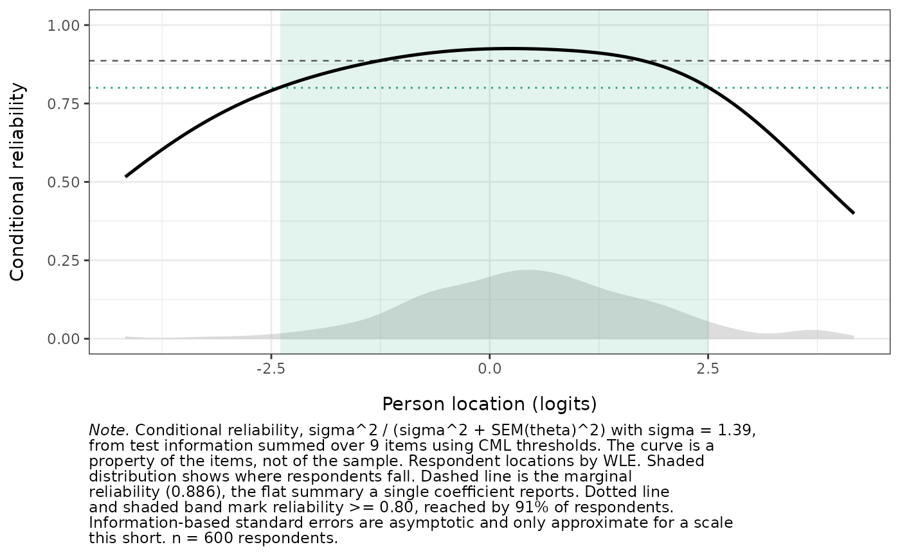

Conditional measurement precision across the latent scale
Source:R/reliability_curve.R
RMreliabilityCurve.RdPlots (or tabulates) how precisely a scale measures at each point of the
latent continuum, rather than collapsing precision to the single number
reported by RMreliability(). The curve is the conditional standard error
of measurement \(SEM(\theta) = 1/\sqrt{I(\theta)}\), the test information
\(I(\theta)\) it comes from, or the conditional reliability derived from
either.
Usage
RMreliabilityCurve(
data,
statistic = "sem",
method = "WLE",
benchmark = NULL,
reference = "marginal",
items = NULL,
item_params = NULL,
boot = FALSE,
boot_iter = 200,
conf_int = 0.95,
parallel = TRUE,
n_cores = NULL,
seed = NULL,
show_density = TRUE,
theta_range = NULL,
n_nodes = 161L,
verbose = FALSE,
output = "ggplot"
)Arguments
- data
A data.frame or matrix of item responses. Items must be scored starting at 0 (non-negative integers). Missing values (
NA) are allowed.- statistic
Character. The quantity on the y-axis:
"sem"(default, the conditional standard error in logits),"information"(test information), or"reliability"(see Details for the formula used, and why). This is the argument that chooses what the figure shows, notmethod.- method
Character. Person-location estimator,
"WLE"(default) or"EAP". This does not change the curve, which is always built from test information. It governs only the respondent locations behind the density overlay and thebenchmarkpercentage, and is ignored whenshow_density = FALSEandbenchmark = NULL.- benchmark
Numeric in (0, 1) or
NULL(default). When supplied, the region of the scale whose conditional reliability reachesbenchmarkis shaded, and the percentage of respondents located inside it is reported. There is deliberately no default value; see Details.- reference
Character. Horizontal line showing the flat summary that a single coefficient implies:
"marginal"(default) or"none".- items
Optional character vector of column names, or numeric column indices, selecting a subset of items. Useful for comparing a short form against the full scale.
- item_params
Optional pre-specified item parameters, used in place of the thresholds estimated from
data. Either a named list of Andrich threshold vectors or a long-format data.frame fromRMitemParameters(), the same two formsRMpersonParameters()accepts. Supply this to draw the curve from anchored or previously published parameters. As inRMpersonParameters(), supplied thresholds are used as given and are not re-centred, so their origin defines the origin of the theta axis.- boot
Logical. If
TRUE, add a bootstrap confidence band to the curve by resampling respondents. DefaultFALSE.- boot_iter
Integer. Bootstrap iterations when
boot = TRUE. Default200.- conf_int
Numeric in (0, 1). HDCI width for the bootstrap band. Default
0.95.- parallel
Logical. Use
miraifor the bootstrap if available. DefaultTRUE.- n_cores
Integer or
NULL. Number of parallel workers. WhenNULL,getOption("mc.cores")is checked first; if neither is set, the bootstrap falls back to sequential.- seed
Integer or
NULL. Random seed for the bootstrap. See easyRasch2-reproducibility.- show_density
Logical. Draw the respondent location distribution as a background band. Default
TRUE.- theta_range
Numeric length-2 vector, or
NULL(default) for \(\pm 3\sigma\).- n_nodes
Integer. Number of points on the theta grid. Default
161.- verbose
Logical. Print a progress bar for the bootstrap. Default
FALSE.- output
Character.
"ggplot"(default),"dataframe"for the curve, or"kable"for a summary table.
Value
If
output = "ggplot": aggplotobject.If
output = "dataframe": a data.frame with one row per grid point and columnstheta,information,sem,reliability, plus<statistic>_lower/<statistic>_upperband columns whenboot = TRUE. Attributes carry the summary quantities:sigma,marginal_ratio(the latent-density-weighted mean of the reliability curve, matchingRMreliability()),marginal_green(the superseded subtractive coefficient),sem_average(root mean error variance),benchmark,benchmark_range,benchmark_percentandn_not_estimable.If
output = "kable": aknitr_kablesummary table of those quantities.
Details
What the curve is. Test information \(I(\theta) = \sum_i
\mathrm{Var}_i(\mathrm{score} \mid \theta)\) is summed from the CML item
thresholds (psychotools), and the conditional standard error follows as
\(1/\sqrt{I(\theta)}\). Both are properties of the item set alone. The
respondent distribution is drawn behind the curve because precision only
matters where people actually are, but it does not enter the curve.
Conditional reliability, and which formula. Two definitions circulate:
$$\rho(\theta) = \frac{\sigma^2}{\sigma^2 + SEM(\theta)^2} \qquad \mathrm{and} \qquad \rho(\theta) = 1 - \frac{SEM(\theta)^2}{\sigma^2}$$
with \(\sigma\) the latent SD estimated by marginal maximum likelihood.
This function uses the first, the ratio form, for three reasons. It is
bounded in (0, 1), whereas the subtractive form returns negative values
whenever \(SEM(\theta) > \sigma\), which is common at the floor of a
skewed scale and at both tails of a short one. It treats \(\sigma^2\) as
true-score variance, which is what the MML estimate of the latent SD is.
And it tracks the reliability of the observed scores far more closely.
Milanzi et al. (2015) report the subtractive coefficient falling to
\(-0.120\) against a true value of \(0.480\) for a 1PL with
\(\sigma^2 = 0.25\). Replicating their design (dev/milanzi_check.R,
1000 replications per cell) gives a mean absolute error against the exact
expected-sum-score reliability of \(0.22\) for the subtractive form and
\(0.018\) for the ratio form, with the subtractive form negative in 99.7%
of replications of their lowest-variance cell. For polytomous Rasch data at
5 to 20 items the corresponding errors are \(0.18\) and \(0.015\).
The advantage is concentrated where it matters rather than uniform. Where information is high relative to the trait variance the two forms are close and either can be nearer the truth. The gap comes from the low-information cases, where the subtractive form does not merely lose accuracy but leaves the (0, 1) interval altogether.
marginal_ratio is the latent-density-weighted mean of the reliability
curve rather than the ratio formed from the averaged error variance. The two
differ by Jensen's inequality, and the curve mean is the more accurate of
the pair (mean absolute error 0.015 against 0.018 for binary data, 0.010
against 0.015 for polytomous).
RMreliability() reports the same ratio-form coefficient in its
"Marginal (ratio form)" row, so the scalar and the curve agree. The
superseded subtractive value is still returned as marginal_green for
comparison with easyRasch2 1.2.0 and earlier, and with mirt::marginal_rxx()
and similar software.
Limits. The information-based standard error is asymptotic, and is only
an approximation for short scales; Milanzi et al. (2015) find the worst
behaviour with six items. The curve describes the precision of the person
location estimate on the logit scale, which is not the same quantity as the
reliability of a raw sum score, and reliability computed on a latent scale
is consistently higher than its manifest counterpart. Use RMscoreSE() for
the raw-score view.
No default benchmark. benchmark is NULL unless asked for, in keeping
with the package's treatment of fixed rules of thumb. McNeish and Dumas
(2025), whose respondent-weighted summary this borrows, are explicit that
their own interpretive percentages are heuristic and should not be used as
cutoffs.
References
Green, B. F., Bock, R. D., Humphreys, L. G., Linn, R. L., & Reckase, M. D. (1984). Technical Guidelines for Assessing Computerized Adaptive Tests. Journal of Educational Measurement, 21(4), 347-360. doi:10.1111/j.1745-3984.1984.tb01039.x
McNeish, D., & Dumas, D. (2025). Reliability representativeness: How well does coefficient alpha summarize reliability across the score distribution? Behavior Research Methods, 57(3), 93. doi:10.3758/s13428-025-02611-8
Milanzi, E., Molenberghs, G., Alonso, A., Verbeke, G., & De Boeck, P. (2015). Reliability measures in item response theory: Manifest versus latent correlation functions. British Journal of Mathematical and Statistical Psychology, 68(1), 43-64. doi:10.1111/bmsp.12033
Examples
# \donttest{
if (requireNamespace("ggplot2", quietly = TRUE)) {
# Conditional SEM across the scale
RMreliabilityCurve(phq9[, 1:9])
# Conditional reliability, with the region reaching .8 shaded
RMreliabilityCurve(phq9[, 1:9], statistic = "reliability",
benchmark = 0.8)
}

# Summary quantities
RMreliabilityCurve(phq9[, 1:9], benchmark = 0.8, output = "kable")
#>
#>
#> Table: Conditional measurement precision. Test information summed over 9 items from CML thresholds, respondent locations by WLE. Conditional reliability is the ratio form, sigma^2 / (sigma^2 + SEM^2). n = 600 respondents.
#>
#> |Quantity |Value |
#> |:------------------------------------------------------|:-------------|
#> |Latent SD (sigma) |1.390 |
#> |Marginal reliability (ratio form, as in RMreliability) |0.886 |
#> |Marginal reliability (Green/Lord, superseded) |0.862 |
#> |Average SEM (logits) |0.517 |
#> |Minimum SEM (logits) |0.396 |
#> |Theta at minimum SEM |0.26 |
#> |Theta range with reliability >= 0.80 |-2.40 to 2.50 |
#> |Respondents located in that range |91.3% |
# }